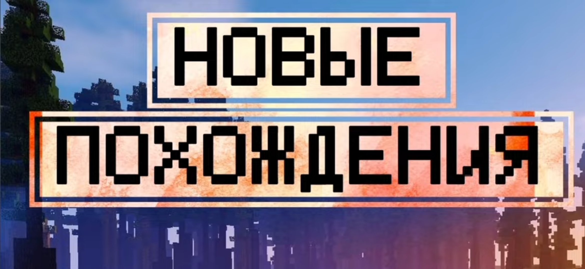
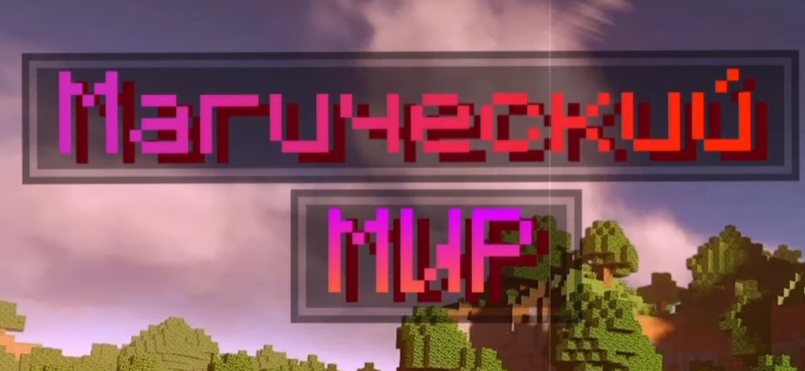

это первый сезон Minecraft-сериала с модами, созданный Данилом. Этот сезон начинается с простого приключения в лесу, но постепенно сюжет разворачивается в более сложные истории с магическими существами, битвами с боссами и постапокалиптическим миром. Действие сезона происходит в 2041 году, что добавляет уникальной атмосферы происходящему.
Скачать пересказ
Начало▼
Сезон начинается с того, как Данил оказывается в лесу и начинает строить своё убежище. В первой серии он сражается с многочисленными монстрами, создаёт энергетик и знакомится с таинственным персонажем по имени Фьюджин. Постепенно он узнаёт больше о мире вокруг него и вступает в борьбу за выживание, создавая оружие и исследуя мир, в котором оказался.
События и финал▼
В ходе сезона Данил сталкивается с различными угрозами, включая монстров, загадочные артефакты и странные личности, такие как Линад — его тёмное отражение. Главным испытанием становится битва с Эндер-драконом, которая завершает сезон. После победы Данил отдаёт драконье яйцо и переносится в новый мир, где его ждут дальнейшие приключения. Финал сезона заканчивается на интригующей ноте, когда Данил видит Линада в пустоте, подготавливая зрителя к новому сезону.
Заключение ▼
"Новые Похождения" — это захватывающее начало приключений Данила, где он не только строит своё выживание в Minecraft, но и встречает множество интересных персонажей и сражается с опасными боссами. Этот сезон стал основой для всей серии и открыл двери для дальнейших сюжетных линий в "Магическом мире".

"Магический Мир" — это второй сезон Minecraft-сериала с модами, созданного Данилом. В этом сезоне главный герой попадает в совершенно новую реальность, где магия, древние существа и альянсы воинов становятся частью его повседневной жизни. В отличие от первого сезона, "Магический Мир" погружает зрителя в фэнтезийные элементы и даёт Данилу возможность изучать магические силы.
Скачать пересказ
Начало▼
Сезон начинается с того, как Данил попадает в необычный мир с деревней, где рыцари предлагают ему вступить в Альянс. Он сталкивается с новыми персонажами, такими как Майк, который хочет приютить Данила, и другими жителями деревни. Данил соглашается стать частью Альянса, который защищает деревню от монстров, и начинает сражаться с различными врагами, такими как зомби и нежить.
Раздел 2 ▼
Одним из самых значительных врагов в сезоне становится Некроман, могущественный босс, которого Данил побеждает после сложного боя. Помимо этого, Данил сталкивается с ожившим воином в Аду и сражается с Боссом-скелетом-пиратом на корабле. В финале сезона Данил побеждает очередного босса, а затем с Альянсом празднует победу салютами. Однако, несмотря на видимый конец приключений, сезон оставляет задел на будущее, когда Данил снова встречает Линада в пустоте.
Заключение ▼
"Магический Мир" расширяет вселенную Данила, вводя магические элементы и более сложные испытания. Этот сезон углубляет историю главного героя, развивая его как воина и исследователя, и подготавливает почву для следующих приключений.